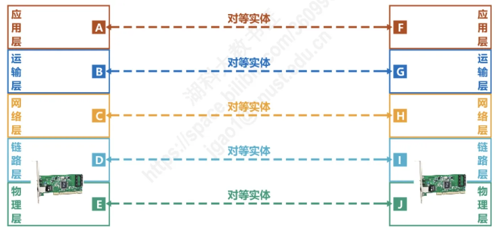
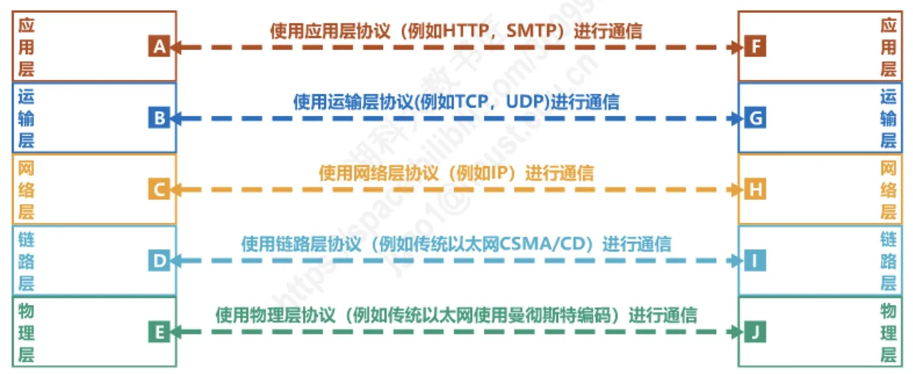
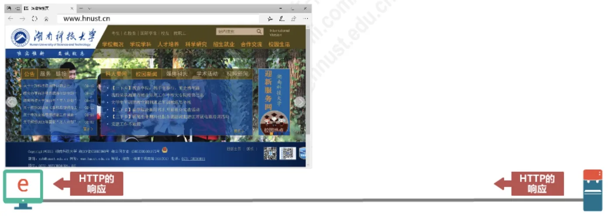
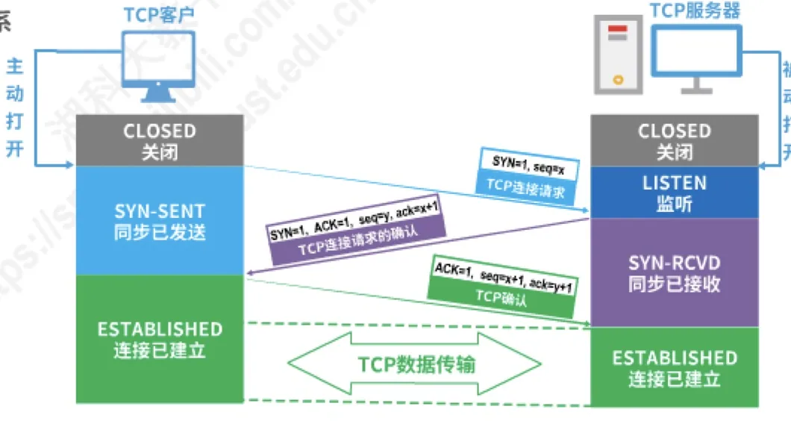
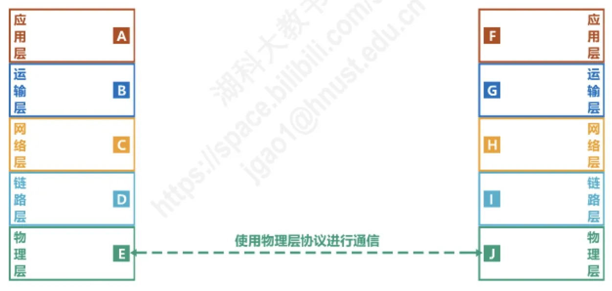
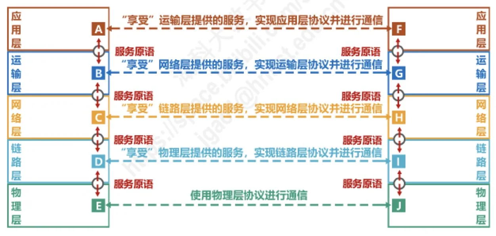
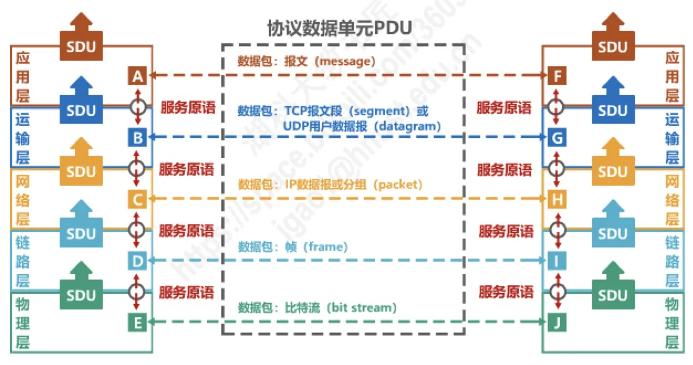

计算机通信与网络 · 第 1 章 概述
1.6 计算机网络体系结构（4）—专用术语
上一节我们把五层协同工作的过程走了一遍，这一节把这些过程中反复出现的名词正式定义下来：实体、对等实体、协议及其三要素、服务、服务访问点、服务原语，以及协议数据单元 PDU 和服务数据单元 SDU。这些术语是后面每一章都要用的「行话」，其中「协议是水平的、服务是垂直的」是本节最需要记牢的一句话。
1. 实体与对等实体
实体（Entity）指任何可发送或接收信息的硬件或软件进程。上一节的例子里，浏览器进程是一个实体，Apache 服务器进程是一个实体，网卡收发的驱动程序也是实体 —— 只要它能收或能发信息，就算一个实体。
对等实体（Peer Entity）指收发双方相同层次中的实体。浏览器进程与服务器进程同属应用层，它们是对等实体；两端的 TCP 实现同属运输层，也是对等实体。而同一台主机里相邻两层的实体（如应用层实体与运输层实体）则不构成对等关系。

2. 协议及其三要素
协议（Protocol）是控制两个对等实体进行逻辑通信的规则的集合。请注意「逻辑通信」这个限定：两个对等实体之间的通信在形式上像是直接进行的，实际上数据要经过下面各层一路传递过去，所以这只是逻辑上的通信。
不同层次的对等实体使用不同的协议：运输层的对等实体使用运输层协议（例如 TCP、UDP）进行通信，数据链路层的对等实体使用链路层协议（例如传统以太网的 CSMA/CD）进行通信。

协议由三个要素构成：
- 语法：定义所交换信息的格式。例如 4.7 节要讲的 IP 数据报格式，规定首部有哪些字段、各占多少比特；
- 语义：定义收发双方所要完成的操作。例如客户端发送 HTTP 的 GET 请求，服务器就应当把它所请求的资源作为 HTTP 响应返回；
- 同步：定义收发双方的时序关系。例如 HTTP 的请求与响应必须一前一后，而 5.8.1 节要讲的 TCP 建立连接，双方要按「请求 → 确认 → 确认」的次序交互若干报文才能进入数据传输阶段。


3. 服务：协议是水平的，服务是垂直的
在协议的控制下，两个对等实体之间的逻辑通信使得本层能够向上一层提供服务。反过来说，要实现本层协议，还需要使用下面一层所提供的服务。
于是每一层的处境都是：向下「享受」下一层提供的服务，向上为上一层提供服务。例如链路层「享受」物理层提供的服务来实现链路层协议，网络层「享受」链路层提供的服务来实现网络层协议，运输层「享受」网络层的服务来实现应用层协议，应用层则「享受」运输层的服务。

由此可以引出本节最重要的一组对比：
- 协议是「水平」的：协议控制的是收发双方同一层次的对等实体之间的通信；
- 服务是「垂直」的：服务是相邻两层之间，下层通过层间接口向上层提供的功能。
还有一条重要性质：实体看得见相邻下层所提供的服务，但并不知道实现该服务的具体协议。也就是说，下面的协议对上面的实体是透明的 —— 应用层只管调用运输层提供的服务，完全不必关心运输层内部是用 TCP 还是 UDP 实现的细节。
4. 服务访问点 SAP
服务访问点 SAP（Service Access Point）是在同一系统中相邻两层的实体交换信息的逻辑接口，用于区分不同的服务类型。各层的服务访问点分别是：
- 数据链路层的服务访问点是帧的「类型」字段；
- 网络层的服务访问点是 IP 数据报首部中的「协议字段」；
- 运输层的服务访问点是「端口号」（详见 5.2 节）。
换句话说，上级实体通过服务访问点把数据交给下级实体，同时告诉它「这是哪一类服务」。
5. 服务原语
上层使用下层所提供的服务，必须通过与下层交换一些命令，这些命令称为服务原语。服务原语就是相邻两层在服务访问点上交互的具体动作 —— 有请求、有指示、有响应、有证实。可以说：服务访问点是「接口」，服务原语是通过这个接口交换的「命令」。

6. 协议数据单元 PDU 与服务数据单元 SDU
协议数据单元 PDU（Protocol Data Unit）指对等层次之间传送的数据包，也就是该层的数据单元。各层的 PDU 及常用名称如下：
| 层次 | 协议数据单元（PDU） |
|---|---|
| 应用层 | 报文（message） |
| 运输层 | TCP 报文段（segment）或 UDP 用户数据报（datagram） |
| 网络层 | IP 数据报或分组（packet） |
| 数据链路层 | 帧（frame） |
| 物理层 | 比特流（bit stream） |
服务数据单元 SDU（Service Data Unit）则指同一系统内，层与层之间交换的数据包。两者的关系是：上层交下来的 SDU 加上本层的控制信息（首部）之后，就成为本层对等实体之间传送的 PDU。所以：
- 多个 SDU 可以合成一个 PDU；
- 一个 SDU 也可以划分为几个 PDU。

本节小结
- 实体是任何可发送或接收信息的硬件或软件进程；对等实体是收发双方相同层次中的实体；
- 协议是控制两个对等实体进行逻辑通信的规则的集合，三要素是语法（所交换信息的格式）、语义（收发双方要完成的操作）、同步（双方的时序关系）；
- 服务：在协议的控制下，对等实体间的逻辑通信使本层能向上一层提供服务，而实现本层协议又需要使用下一层提供的服务；协议是水平的，服务是垂直的；实体只看得见下层提供的服务，看不见（也不需要看见）实现该服务的协议，即下层协议对上层实体是透明的；
- 服务访问点 SAP 是相邻两层实体交换信息的逻辑接口：数据链路层是帧的「类型」字段，网络层是 IP 首部的「协议字段」，运输层是「端口号」；服务原语是上层使用下层服务时与下层交换的命令；
- PDU 是对等层次之间传送的数据包（应用层报文、运输层 TCP 报文段 / UDP 用户数据报、网络层 IP 数据报、数据链路层帧、物理层比特流）；SDU 是同一系统内层与层之间交换的数据包；多个 SDU 可合成一个 PDU，一个 SDU 也可划分为几个 PDU。